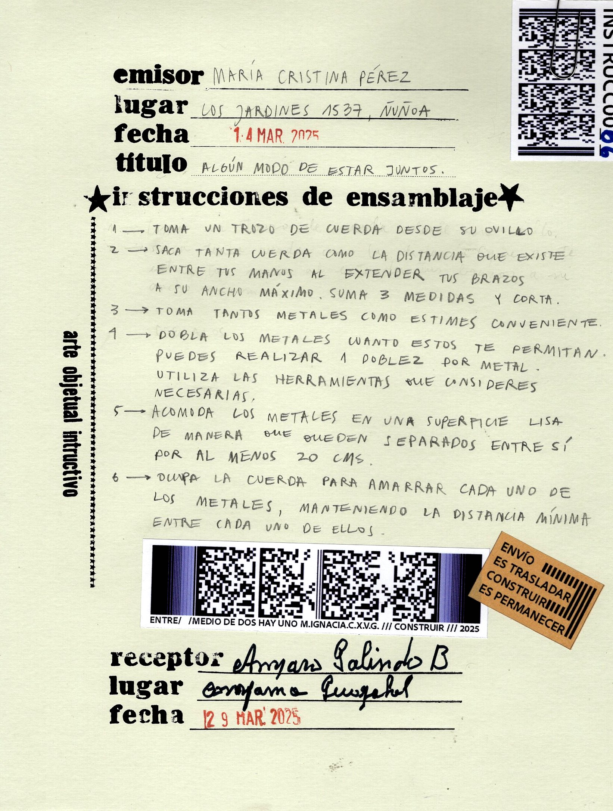
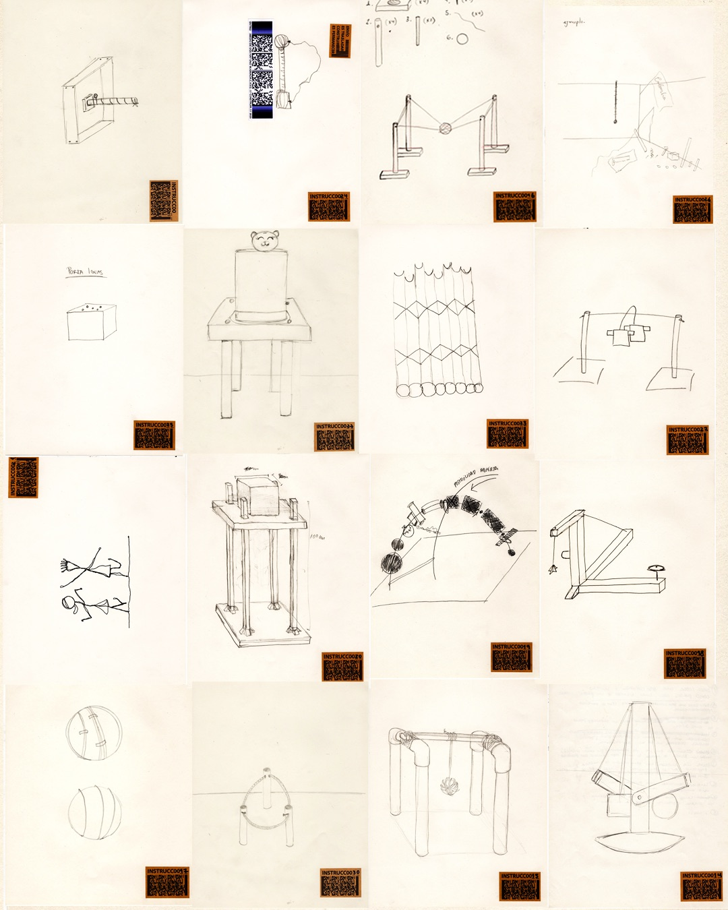
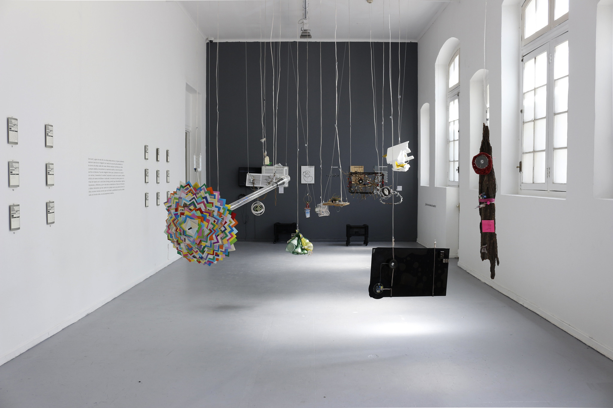
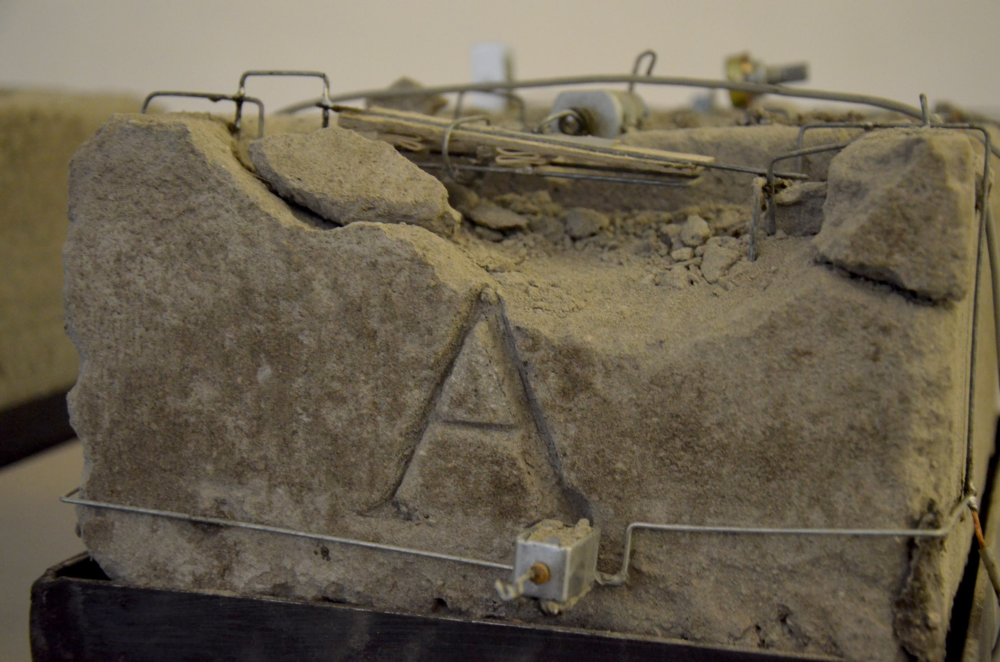
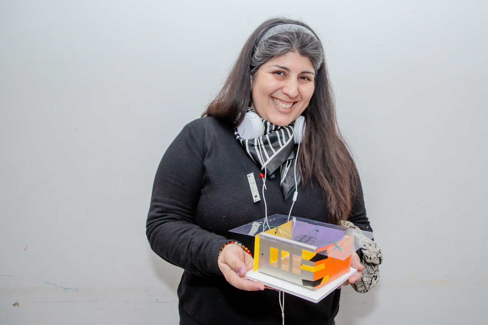
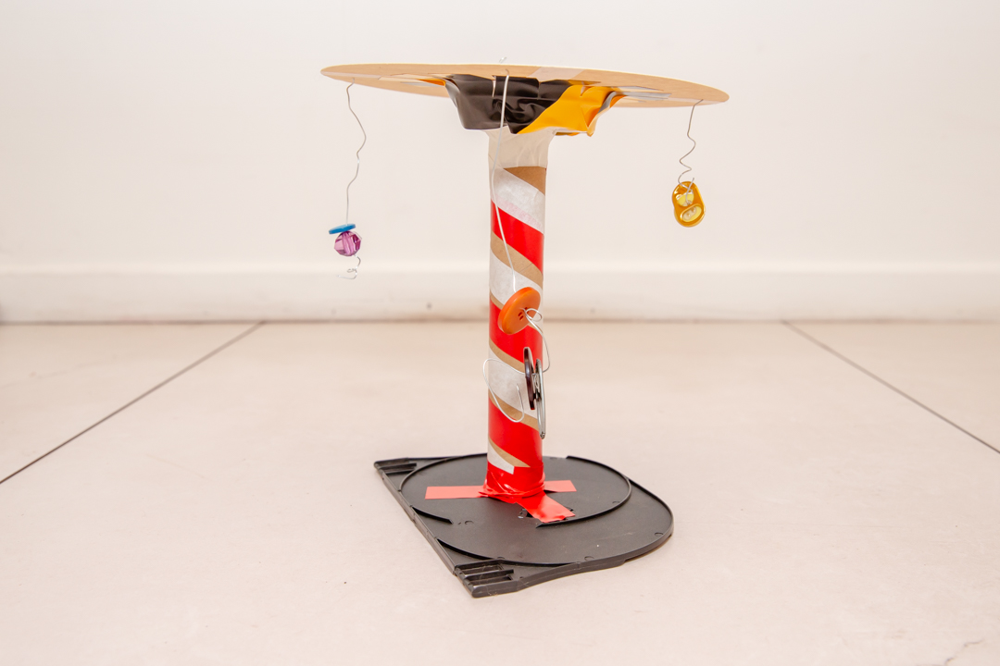
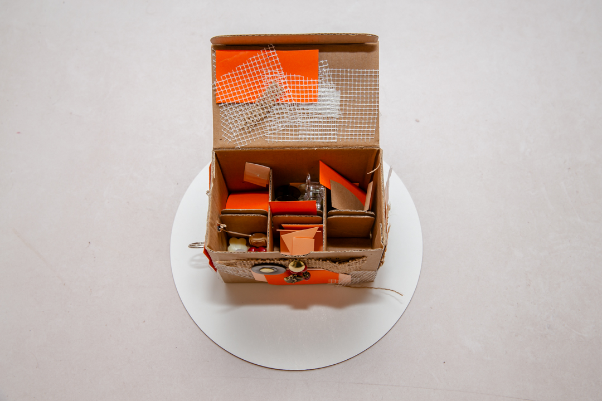

Hola, soy María Ignacia C. X. Valdebenito G. Artista plástica y poeta.
Licenciada en Artes Visuales (2019), titulada en la Universidad de Chile (2021)
y estudiante del Magíster en Artes Mediales en la misma casa de estudios.
He participado en múltiples exposiciones colectivas y he realizado exposiciones individuales,
siendo “Cómo armar una máquina en 10 pasos” (2025) en MAC Forestal, mi más importante y reciente muestra.
Muchas gracias por venir a visitar mi trabajo de manera virtual.
Obras

Motores detenidos
Serigrafía sobre lija para metal grano 60
2026.
Máquina de instrucciones infinitas
Televisor 12 volt,programación processing y arduino, raspberry,
teclado numérico, arduino, servomotor, resortes máquina, zinc,
manguera transparente. Serigrafías sobre lija de madera 90,
120, 160 y 180 gramos y sobre lija para metal de 180 gramos.
Marcos de metal pulidos.
2026.
Cómo armar una máquina en 10 pasos
Museo Arte Contemporáneo, Zócalo, 2025.
Instación objetual electrónica. Máquina luz: programación digital
con sensor de temperatura, ampolletas, diodos y tiras led.
Máquina sonido: programación digital con sensor de luz, parlantes.
Máquina de movimiento: programación digital
con sensor ultrasónico,servomotores. Video instalación: estructura
de madera, metal, cemento y video cenital.
Manuales escritos y diagramas: impresiones digitales. Simbología de
la obra: serigrafía sobre lija de madera 180 gramos.
Construcción con materialidades industriales y encontradas. Madera,
metal y plástico.
Arte Objetual Instructivo
Museo Arte Contemporáneo,2025.
Composición tipográfica sobre opalina lisa y estampillas.
29 Instrucciones escritas y 29 dibujos chilenos.
29 fotografías de construcciones de ensamblaje realizados en Colombia.
15 Instrucciones escritas y 15 dibujos colombianos por construir.
Montaje sobre 16 metros de metalcon e imanes. Separación de madera y cemento.

Hágalo Usted Mismo, HUM
Museo Arte Contemporáneo, AnteZócalo y Sala Juan Egenau
2025
Sistema eléctrico de luz. Ampolleta y tira led difusa. Madera, lámina de metal pulido,
tubo de metal. Composición con tipo móvil.
Recuerdo del atardecer del último día en que hubo noche.
Stencil sobre baldosas. Estructura de madera, eslinga.
2025
Museo en estéreo. Junto a Matías Serrano y EducaMAC
Instalación objetual electrónica. Performance sonora.
Serigrafías sobre madera, vidrio, baldosas y muro. Diagrama en vinilo sobre muro.
Museo Arte Contemporáneo, 2024.

Cuánto Cuesta
Instalación objetual electrónica.
Programación motor paso a paso y bomba de agua, madera, cemento, frasco químico, agua, tubos pvc.
2024
L.I.E.B.O: Lijadora industrial eléctrica de banda orbital
Instalación objetual electrónica. Electrónica analógica, motor dc,
30 metros lija de madera 180 gramos. Cáncamo de madera.
2024
Una mano ayuda a la otra
Instalación objetual eléctrica.
Ventilador funcional y Ventilador malo.
2024
Desde una esquina, una esfera de luz podría caer
Composición objetual electrónica.
Sistema eléctrico, soquete e27, ampolleta e27,
materialidades encontradas: extracto de cajas de plástico, rejillas, mangueras,
elástico, disco de desvaste usado. Eslinga
Composición objetual
Materialidades encontradas: Extractos de cajas de plástico, madera, cuerdas.
2024
Composición objetos encontrados
Composición objetual- electrónica.
Circuito transistor 2n222, ventilador,diodos led,tubos pvc, madera, extracto de juguete,
tapa de objeto, manguera de cocina, manguera de aspiradora, tres tapas de botella, tubo pvc,
codo pvc.
Composición objetos encontrados 1
Composición objetual.
Composición objetos encontrados y circuito electrónico 1
Composición objetual y electrónica.
Composición objetos encontrados y circuito electrónico 1
Composición objetual y electrónica.
Composición objetos encontrados y circuito electrónico 1
Composición objetual y electrónica.
Composición objetos encontrados y circuito electrónico 1
Composición objetual y electrónica.
Composición objetos encontrados y circuito electrónico 1
Composición objetual y electrónica.
Nanotecnología
Composición objetual y electrónica.

Serigrafías Nanotenología
Tríptico.Composición gráfica a partir de simbología de electrónica. Serigrafía sobre papel.
47 cm x 32 cm
Composiciones digitales Nanotenología
Pinturas digitales a partir de simbología electrónica.
47 cm x 32 cm
El Taller Explora me invitó a realizar la residencia "Residual",
la cual consistía en trabajar con los residuos de materiales de su taller.
Decidí hacer una recolección de materiales que tuvieran formas primarias:
cuadrados, círculos, rectángulos, esferas, etc.
para poner a disposición de las personas junto a herramientas manuales.
La finalidad de esta recopilación de materialidades y herramientas,
era que el público pudiera intervenir un tablero de madera
que dispuse en uno de los muros de la sala, para así, crear
una composición-construcción colectiva. Asimismo, durante la residencia,
realicé tres máquinas hechizas, una que medía el texto curatorial, otra
que intervenía las tuberías de aire y por última, una máquina que se iba presionando
así misma en una esquina de la sala.
Residencia Baj Artes Visuales
Corporación Cultural Balmaceda Arte Joven. Lugar: Santiago, Chile. Año: 2023.
El proyecto que realicé en esta residencia se titula "Manual de construcción",
en el periodo de esta residencia logré levantar una obra que pudiera ser armada por los espectadores
en la sala de exhibición, gracias a manuales de diagrama y escritos.La obra al lograr ser ensamblada
con todas sus partes, logra iluminarse por medio de 6 ampolletas.
Esta residencia tuvo una duración de 8 meses. Donde pude desarrollar la composición-construcción
objetual, electrónica y gráfica. Además de elaborar conceptualmente las problemáticas de autoría de una obra,
objetualidad y relación tecnología-interacción.
Talleres
Exploraciones plásticas en torno al objeto encontrado
Experimentaciones
Laboratorio Armar y desarmar. Arte instructivo objetual
Exploraciones plásticas en torno al objeto encontrado
Municipalidad de Maipú. Año: 2023
......
Exploraciones plásticas en torno al objeto encontrado
Municipalidad de Maipú. Año: 2023
......



Publicaciones
Libro de poesía, Casa Ajena. Editorial: Ágata Musgo. Año: 2025
Las manos de una mujer realizan una serie de labores con ternura: dan de comer a una vaca, cepillan un caballo y miden la lana de una oveja mientras cortan, peinan, cosen y construyen; hacen el trabajo que sostiene la vida de una casa.
En «Casa ajena» —primer libro de poemas de María Ignacia C. X. Valdebenito G.— el oficio es un lente con el cual miramos la figura materna. Dentro de la intimidad, la hablante y la madre habitan juntas el tiempo del trabajo; en él, comparten la tarea de sostener un hábitat cerrado sobre sí mismo. El detalle de cada gesto nos direcciona a la vulnerabilidad de vivir expuestas a materiales, objetos y herramientas que es necesario saber manejar, como «Imanes en sus polos correctos para estar / tan cerca como sea posible / de todo lo que no es nuestro propio cuerpo». En estos poemas, la fragilidad tiñe las relaciones con el mundo, ahí donde el cuidado surge como una necesidad. La escritura de Valdebenito indaga en el espacio habitado por los afectos y los modos de sobrevivencia, ofreciéndonos una mirada donde cuerpos y objetos están en constante movimiento, donde los gestos de las manos configuran su propio lenguaje de intimidad.
BITÁCORAS
aquí aún me falta poner cosas
instagram: @no.si.si.no